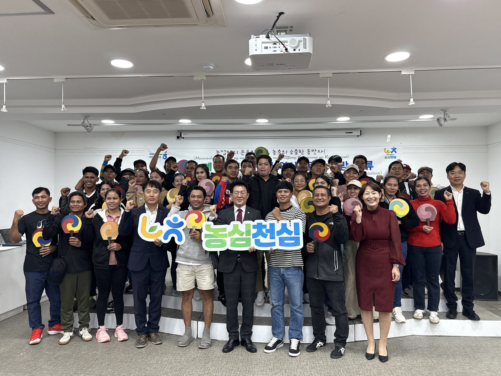
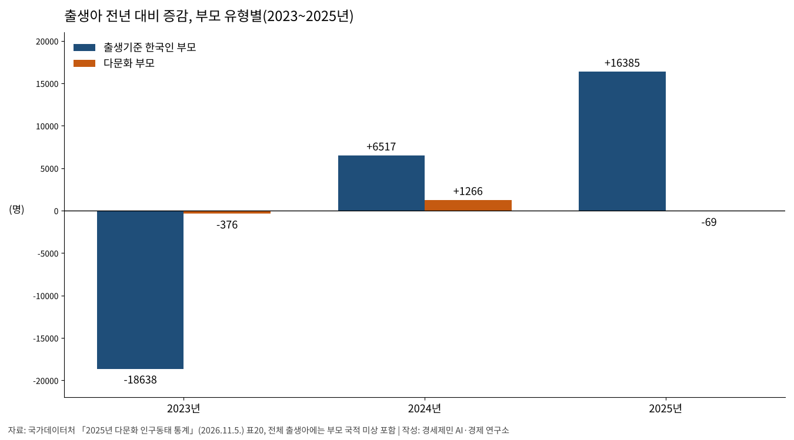
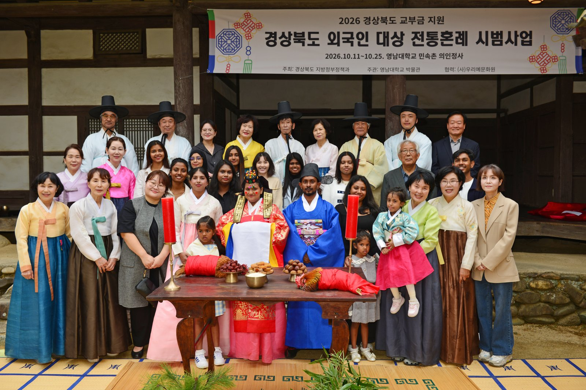
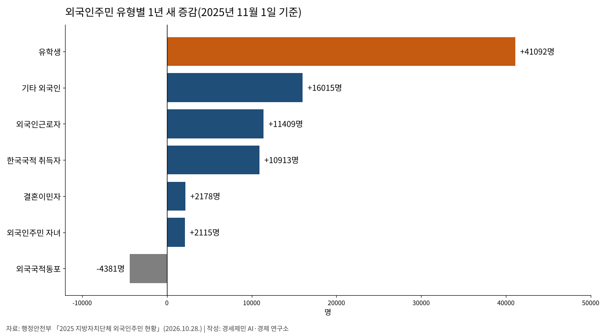
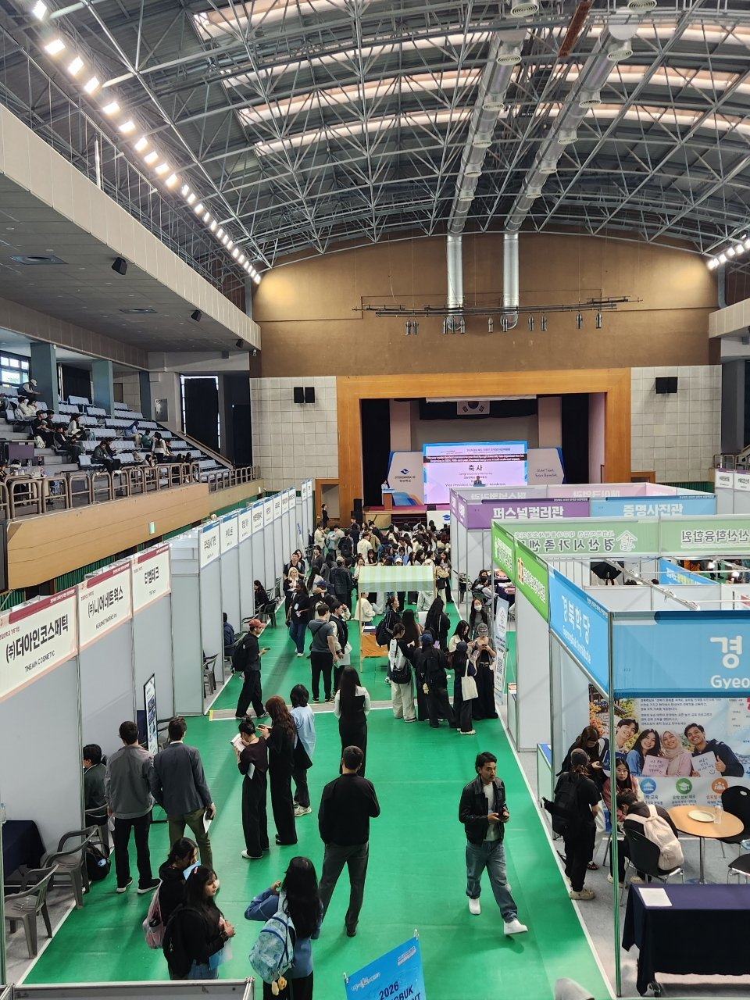
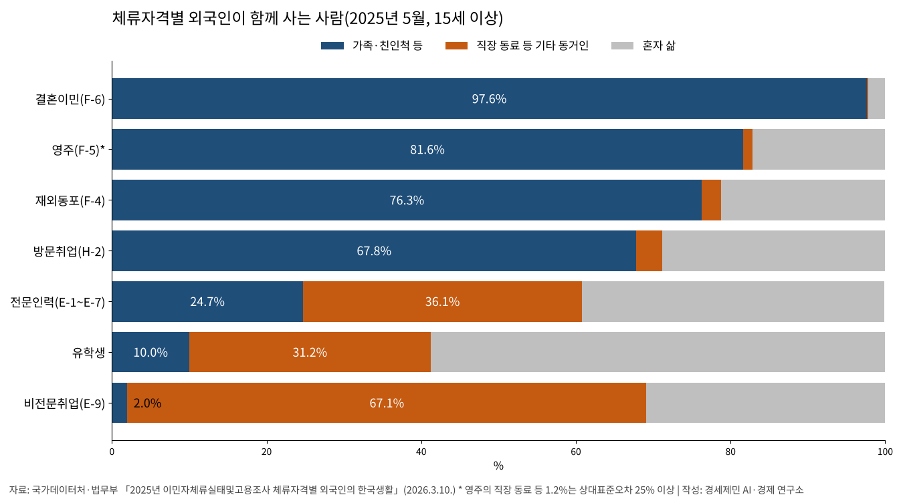
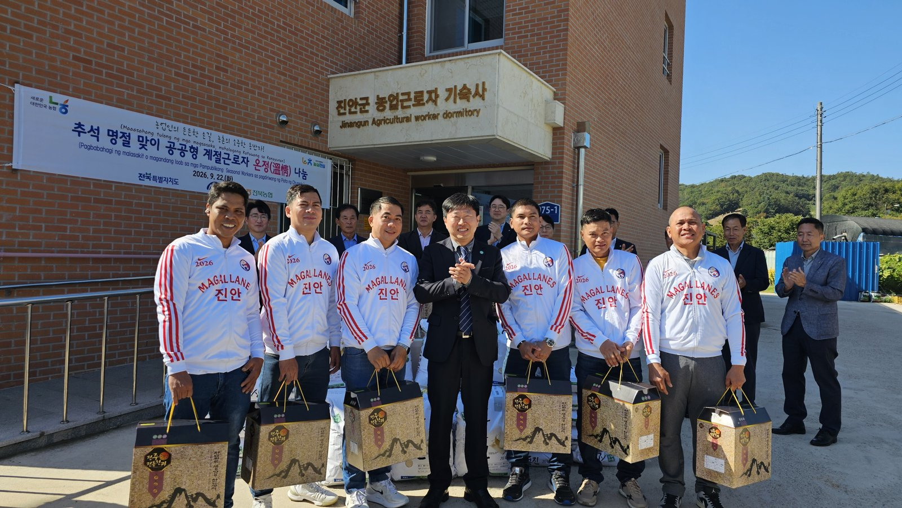
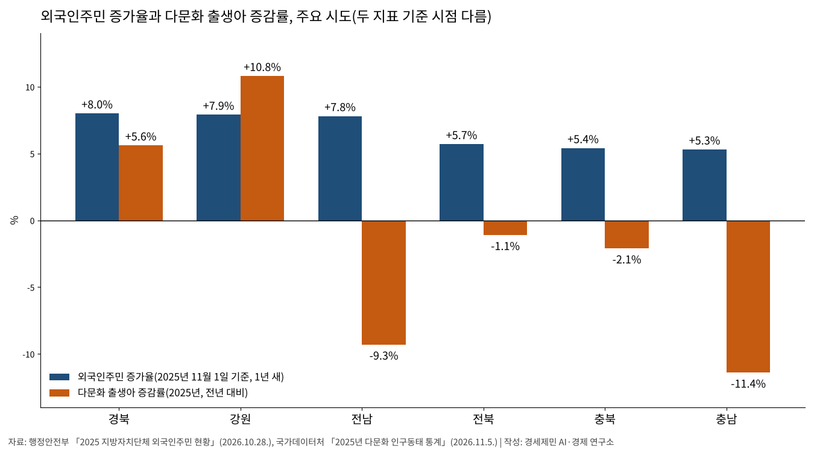
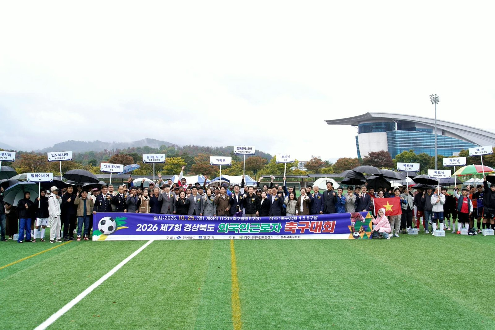
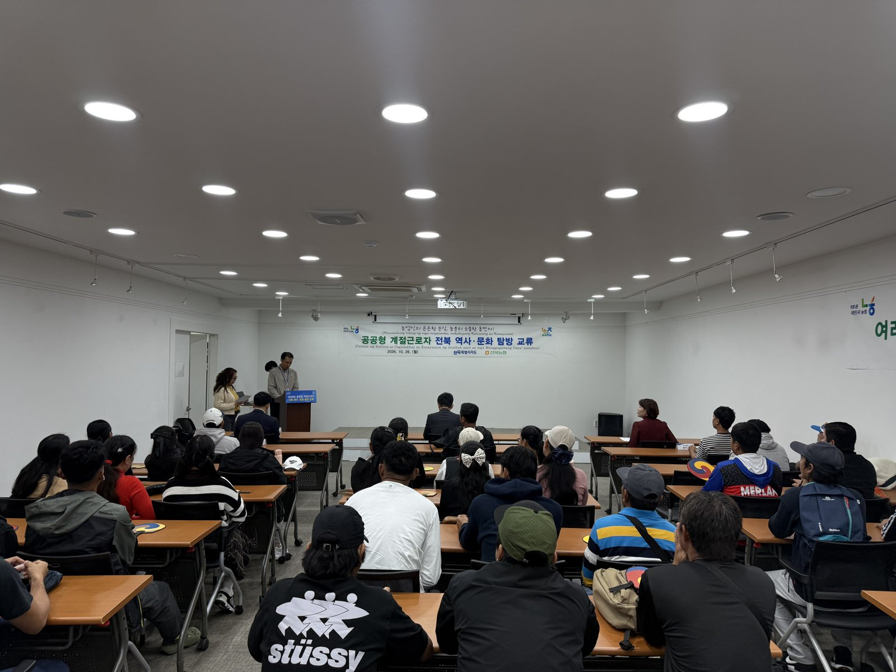

[인구 브리핑] 외국인주민 266만명 역대 최대, 다문화 출생아는 69명 감소
출생아 1만6024명 증가, 다문화 출생아 감소
한국 국적 없는 외국인 증가분 62% 유학생
비전문취업 외국인 가족 동거 2.0%
AI경제저널=김갑봉 기자 | 지난해 태어난 아이는 25만4341명으로 1년 새 1만6024명 늘었다. 부모가 모두 출생기준 한국인인 아이는 1만6385명 늘었다. 부모 한쪽이 외국인이나 귀화자인 경우 등 다문화 출생아는 1만3347명으로 69명 줄었다.
같은 해 외국인주민은 266만2967명으로 역대 최대다. 국가데이터처의 다문화 인구동태 통계는 외국인만으로 이뤄진 가족에서 태어난 아이를 집계에서 뺀다. 일하러 온 비전문취업 외국인은 가족을 데려올 동반 자격이 없고, 가족과 함께 사는 사람은 2.0%다.

출생아 1만6024명 늘 때 다문화 출생아 69명 줄어
국가데이터처는 11월 5일 「2025년 다문화 인구동태 통계」를 냈다. 다문화 출생아는 2024년 1만3416명에서 2025년 1만3347명으로 줄었다. 전체 출생에서 차지하는 비중은 5.6%에서 5.2%로 0.4%포인트 내려갔다. 2024년에는 다문화 출생아가 10.4% 늘었다.
출생기준 한국인 아버지와 외국인 어머니 사이의 출생아는 8318명으로 1.7% 늘었다. 외국인 아버지와 출생기준 한국인 어머니 사이의 출생아는 3092명으로 5.4% 늘었다. 부모 가운데 귀화자가 있는 출생아는 1937명으로 363명(15.8%) 줄었다.
2025년 전체 혼인은 24만326건으로 8.1% 늘었다. 다문화 혼인은 2만1399건으로 51건 줄었다. 전체 혼인에서 차지하는 비중은 9.6%에서 8.9%로 내려갔다. 부부 가운데 귀화자가 있는 혼인은 2076건으로 9.0% 줄었다.
이 통계는 읍·면·동과 시·구에 낸 인구동향조사 신고서와 대법원 가족관계등록자료로 만든다. 다문화 출생은 부모 한쪽이 외국인이나 귀화자이거나 부모 모두 귀화자인 경우다. 국가데이터처는 자료가 불완전해 외국인 개인이나 외국인만으로 이뤄진 가족의 출생·혼인 등은 뺀다고 밝혔다.


외국인주민 266만명, 한국 국적 없는 외국인 증가분의 62%는 유학생
행정안전부는 10월 28일 「2025 지방자치단체 외국인주민 현황」을 냈다. 2025년 11월 1일 기준 외국인주민은 총인구의 5.1%다. 이 가운데 한국 국적이 없는 사람은 210만9057명으로 1년 새 6만6313명 늘었다.
한국 국적이 없는 외국인 증가분 6만6313명 가운데 유학생 증가가 4만1092명으로 62%다(연구소 계산). 유학생은 27만4329명이 됐다. 외국인근로자는 51만4043명으로 1만1409명(2.3%) 늘었다. 결혼이민자는 19만4017명으로 2178명(1.1%) 늘었다.
외국인주민 자녀는 부모 가운데 한 사람이 한국 국적인 가정에서 태어난 아이로 29만7419명이다. 1년 새 0.7% 늘었다. 경상북도 도내 외국인 유학생은 2023년 7528명에서 2026년 2만2456명으로 약 3배가 됐다(경상북도 10월 7일 발표).


비전문취업 외국인 32만1000명, 가족과 사는 사람 2.0%
국가데이터처와 법무부는 2025년 12월과 2026년 3월 「2025년 이민자체류실태및고용조사」 결과를 냈다. 2025년 5월 15세 이상 상주 비전문취업(E-9) 외국인은 32만1000명이다. 15~29세가 14만5000명, 30대가 14만1000명이다. 89%가 15~39세다(연구소 계산).
이들은 직장 동료 등과 사는 비중이 67.1%, 혼자 사는 비중이 30.9%다. 가족·친인척과 사는 비중은 2.0%로 체류자격 가운데 가장 낮다. 결혼이민자는 97.6%가 가족과 산다. 비전문취업 외국인의 47.7%는 기숙사에 살고 18만8000명은 비수도권에 산다.
비전문취업 외국인은 총소득에서 국내외 송금에 쓰는 비중이 56.5%로 지출 항목 가운데 가장 크다. 출입국관리법 시행령은 배우자와 미성년 자녀의 동반(F-3) 자격을 유학, 특정활동(E-7) 등 정해진 체류자격에만 준다. 비전문취업(E-9)과 계절근로(E-8)는 여기에 들지 않는다.


외국인주민 증가율 1~3위 경북·강원·전남, 세 곳 가운데 전남만 다문화 출생아 감소
외국인주민 증가율은 경북 8.0%, 강원 7.9%, 전남 7.8% 차례로 높다. 경북 다문화 출생아는 659명으로 5.6%, 강원은 360명으로 10.8% 늘었다. 전남 다문화 출생아는 507명으로 9.3% 줄었다.
충남은 총인구 대비 외국인주민 비율이 7.9%로 시도 가운데 가장 높다. 충남 다문화 출생아는 667명으로 11.4% 줄었다. 시군구로는 전남 영암이 22.4%, 충북 음성이 19.7%로 외국인주민 비율이 높다. 외국인주민은 11월 1일 시점, 출생은 한 해 발생과 주소지 기준이다.


계속 살고 싶다 89.8%, 숙련기능인력 비자는 가족 동반 허용
같은 조사에서 체류 기간이 끝난 뒤에도 한국에 계속 살기를 바라는 외국인은 89.8%다(영주 자격 제외). 비전문취업 외국인은 86.9%가 계속 체류를 바랐다. 비전문취업 외국인의 70.2%는 체류 기간 연장으로 남기를 바랐다.
법무부는 숙련기능인력(E-7-4) 비자의 특징을 「가족 동반 허용 등 장기체류를 장려하여 선별적 정주화 도모」라고 밝혔다. 최근 10년 안에 비전문취업·선원취업·방문취업으로 4년 이상 머문 사람이 대상이다. 점수제에서 300점 만점에 200점 이상을 받아야 한다.
기업 추천, 최근 2년 연간소득 평균 2600만원 이상, 한국어 능력은 필수다. 법무부는 2026년 숙련기능인력 비자 발급규모를 3만3000명으로 정했다. 2025년 3만5000명보다 2000명 적다. 같은 해 비전문취업 비자 발급규모는 8만명이다. 2025년에는 13만명으로 잡았고 실제 발급은 5만1670명이었다.
법무부는 농축어업의 숙련기능인력 고용 한도를 국민 고용 인원의 30%에서 최대 50%로 넓혀 2026년 6월부터 시행한다고 밝혔다. 정성호 법무부 장관은 이 제도 개선이 안정적인 숙련 인력 공급과 외국인 근로자의 인권 보호가 공존할 토대가 될 것이라고 밝혔다.
법무부는 2월 10일 외국인 유입 효과 분석도 내놓았다. 분석을 보면 2018~2023년 지역에서 외국인이 1명 늘 때 「직업」 사유로 전입한 내국인도 약 1명 늘었다. 주택·교육 같은 「비직업」 사유로는 통계적으로 유의미한 인구 이동이 없었다.
당시 호주 울런공대 다문화연구센터에 있던 스티븐 카슬스(Stephen Castles)는 1986년 논문에서 서유럽 여섯 나라의 손님노동자 제도를 다뤘다. 그는 논문 초록에서 이주 과정이 노동자·고용주·국가의 애초 의도와 달리 가족 재결합과 정착으로 이어졌다고 썼다.
카슬스는 같은 초록에서 1974년 이후 모집이 멈췄지만 많은 이주자가 남아 영구적인 소수민족이 됐다고 밝혔다. 손님노동자 제도는 길게 보면 필연적으로 영구 이주로 이어진다고 주장했다. 알맞은 정책으로 질서 있는 정착을 계획하는 편이 낫다고도 주장했다.

지난해 아이는 1만6024명 더 태어났고 다문화 출생아는 69명 줄었다. 외국인주민은 266만명으로 역대 최대다. 비전문취업 외국인 32만1000명은 동반 자격이 없고, 가족과 사는 사람은 2.0%다.
참고문헌
공식 발표자료
- 국가데이터처 사회통계국 인구동향과, 「2025년 다문화 인구동태 통계」, 보도자료, 2026년 11월 5일(KDI 경제교육·정보센터 게시), https://eiec.kdi.re.kr/policy/materialView.do?num=289124
- 국가데이터처 사회통계국 인구동향과, 「2025년 출생 통계」, 보도자료, 2026년 8월 26일(KDI 경제교육·정보센터 게시), https://eiec.kdi.re.kr/policy/materialView.do?num=285815
- 행정안전부 사회통합지원과, 「국내 거주 외국인주민 수 266만 명, 총인구 대비 5.1%, 4년 연속 증가세 이어가」(붙임 2025 지방자치단체 외국인주민 현황 통계표), 보도자료, 2026년 10월 28일(KDI 경제교육·정보센터 게시), https://eiec.kdi.re.kr/policy/materialView.do?num=288644
- 국가데이터처·법무부, 「2025년 이민자체류실태및고용조사 결과」, 보도자료(국가데이터처 고용통계과), 2025년 12월 18일, https://mods.go.kr/board.es?act=view&bid=11109&list_no=442471&mid=a10301010000
- 국가데이터처·법무부, 「2025년 이민자체류실태및고용조사 체류자격별 외국인의 한국생활」(부록 「출입국관리법 시행령」 별표 1의2 수록), 보도자료(국가데이터처 고용통계과), 2026년 3월 10일, https://mods.go.kr/board.es?act=view&bid=11109&list_no=443915&mid=a10301030400
- 법무부 출입국·외국인정책본부 외국인정책과·체류관리과, 「외국인 유입의 경제적 영향을 고려한 2026년 연간 비자 발급규모 공표」, 보도자료, 2026년 2월 10일, https://www.immigration.go.kr/bbs/immigration/214/490655/download.do
- 법무부 출입국·외국인정책본부 체류관리과, 「농어촌 외국인 숙련인력 고용 한도 50%로 확대…외국인 노동자 '부당 이직' 시 이전 경력도 인정」, 보도자료, 2026년 6월 1일, https://www.immigration.go.kr/bbs/immigration/214/495389/download.do
- 경상북도, 「경북도, 외국인 유학생 취업박람회 1,000명 규모로 성장」, 보도자료, 2026년 10월 7일, https://www.gb.go.kr/page/10107/10004.do?pageDtlOrdrNo=1&boardNo=1370420&boardMngNo=12&importUrl=%2Fboard%2Fview.do
학술 문헌
- Stephen Castles, "The Guest-Worker in Western Europe — An Obituary", International Migration Review 20(4), 761~778쪽, 1986, https://doi.org/10.1177/019791838602000402
도표 출처
- [도표1] 국가데이터처 「2025년 다문화 인구동태 통계」 표20, [도표2] 행정안전부 「2025 지방자치단체 외국인주민 현황」, [도표3] 국가데이터처·법무부 「2025년 이민자체류실태및고용조사 체류자격별 외국인의 한국생활」(* 표시는 상대표준오차 25% 이상), [도표4] 행정안전부·국가데이터처 같은 자료. 모두 경세제민 AI·경제 연구소 작성
[사진 출처]
- [사진1] 전북특별자치도 보도자료 「전북특별자치도, 공공형 외국인 계절근로자 대상 역사·문화 탐방 실시,'전북의 멋'선물」 붙임 사진, 2026년 10월 26일 촬영, 공공누리 제4유형, https://www.jeonbuk.go.kr/board/view.jeonbuk?boardId=BBS_0000090&menuCd=DOM_000001101000000000&dataSid=672048
- [사진2] 경상북도 보도자료 「경북도, 외국인 부부 5쌍 한국 전통혼례 지원」 붙임 사진, 2026년 10월 18일 촬영, 보도 2026년 10월 27일, 공공누리 제3유형, https://www.gb.go.kr/page/10107/10004.do?pageDtlOrdrNo=1&boardNo=1370960&boardMngNo=12&importUrl=%2Fboard%2Fview.do
- [사진3] 경상북도 보도자료 「경북도, 외국인 유학생 취업박람회 1,000명 규모로 성장」 붙임 사진, 2026년 10월 7일 행사, https://www.gb.go.kr/page/10107/10004.do?pageDtlOrdrNo=1&boardNo=1370420&boardMngNo=12&importUrl=%2Fboard%2Fview.do
- [사진4] 전북특별자치도 보도자료 「전북자치도, 한가위 맞아 '공공형 외국인 계절근로자' 따뜻한 온정 나눈다」 붙임 사진, 2026년 9월 22일 촬영, 공공누리 제4유형, https://www.jeonbuk.go.kr/board/view.jeonbuk?boardId=BBS_0000090&menuCd=DOM_000001101000000000&dataSid=670663
- [사진5] 경상북도 보도자료 「국경 넘어 축구로 하나 된 우정, 경주 외국인근로자 축구 한마당」 붙임 사진, 2026년 10월 25일 행사, 보도 2026년 10월 26일, https://www.gb.go.kr/page/10107/10004.do?pageDtlOrdrNo=1&boardNo=1370923&boardMngNo=12&importUrl=%2Fboard%2Fview.do
- [사진6] 전북특별자치도 보도자료(사진1과 같은 보도자료) 붙임 사진, 2026년 10월 26일 촬영, 공공누리 제4유형, https://www.jeonbuk.go.kr/board/view.jeonbuk?boardId=BBS_0000090&menuCd=DOM_000001101000000000&dataSid=672048
※ 이 기사는 인공지능기자 위민아이(Wemin_AI)와 협력해 작성했습니다.
관련기사
- [인구 브리핑] 인구감소지역 주민 1년 새 1만6000명 감소, 외국인은 2만7000명 증가
- [돌봄] 시급은 최저임금 넘는데 월급 108만8000원…요양보호사 임금이 돌봄의 질 가른다
- [일자리·임금] 가계소득 늘어난 몫의 69%는 나랏돈이었다
- [농업 브리핑] 남는 쌀 1.9%에 벼 감산, 20년 새 30% 줄어든 논의 홍수·식량 기능
저작권자 © AI경제저널 무단전재 및 재배포, AI학습 및 활용 금지